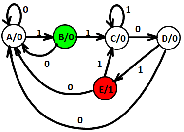

Chapter 4 Part 2
Sequential Circuit Design
Formulation: Finding a State Diagram
A state is an abstraction of the history of the past applied inputs to the circuit (including power-up reset or system reset).
将文本化的需求变为用状态机描述（整个电路经过哪些状态？每个状态之间由哪个输入进行驱动？输出是什么？）
A Example: Sequence Recognizers 序列识别
- A sequence recognizer is a sequential circuit that produces a distinct output value whenever a prescribed pattern of input symbols occur in sequence, i.e, recognizes an input sequence occurrence.
需要找到指定序列的头尾
To develop a sequence recognizer state diagram:
- Begin in an initial state in which NONE of the initial portion of the sequence has occurred (typically “reset” state).
- Add a state that recognizes that the first symbol has occurred.
- Add states that recognize each successive symbol occurring.
- The final state represents the input sequence (possibly less the final input value) occurrence.
- Add state transition arcs which specify what happens when a symbol not in the proper sequence has occurred.
- Add other arcs on non-sequence inputs which transition to states that represent the input subsequence that has occurred.

状态等效
- 完全确定状态表： 状态表中的次态和输出都有确定的状态和确定的输出值。
-
等效状态：设状态S1和S2是完全确定状态表中的两个状态,如果对于所有可能的输入序列，分别从状态S1和状态S2出发，所得到的输出响应序列完全相同，则状态S1和S2是等效的，记作(S1, S2), 或者说，状态S1和S2是等效对。等效状态可以合并。这里“所有可能的输入序列”是指长度和结构是任意的，它包含无穷多位，且有无穷多种组合。
-
状态等效的三种情况：首先输出相同，其次或次态相同，或次态交错，或次态循环


$S_i$与$S_j$等效，$S_k$与$S_l$等效
-
隐含表化简
-
作隐含表
- 顺序比较，寻找等效状态对
- 状态对等效，打“√”；
- 状态对不等效，打“×”；
- 状态对是否等效需进一步检查，则标记次态对。


- 进行关联比较，确定等效状态对
- 由于CD、DE不等效，所以DG不等效，画斜线标志
 处于循环链中的每一个状态都是等效状态对
处于循环链中的每一个状态都是等效状态对
状态分配
-
基本原则：一般情况下，第一条原则较为重要，需优先考虑，其次要考虑由前三条原则得到的应分配相邻代码的状态对出现的次数，次数多的状态对应优先分配相邻的二进制代码。
-
在相同输入条件下具有相同次态的现态，应尽可能分配相邻的二进制代码 （较为重要）
- 在相邻输入条件，同一现态的次态应尽可能分配相邻的二进制代码
- 输出完全相同的现态应尽可能分配相邻的二进制代码
- 最小化状态表中出现次数最多的状态或初始状态应分配逻辑0

注：（4）中4个状态出现次数都一样多，随意选择一个分配为逻辑0即可
Other Filp-Flop
J-K Filp-Flop
-
与SR类似，但输入11时触发器为求反(opposite state)，即没有非法状态
-
Implementation by D Flip-Flop（为了避免一次性采样）：

- J=0，K=0，Q输出送给D，保持
- J=0，K=1，上下全disable，D置0，reset
- J=1，K=0，D输入为$\overline{Q}+Q$，为1
- J=1，K=1，$\overline{Q}$送给D，求反
T Flip-Flop
单输入T，T=0保持，T=1求反
Reset (asynchronous or synchronous) essential 需要reset赋初值

时序电路设计
- 明确需求
-
状态图
-
状态表
- 状态转移方程
- 工艺映射
- 电路验证